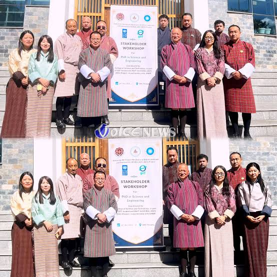
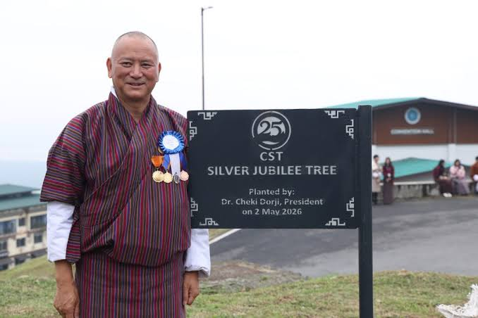

College of Science and Technology
ཚན་རིག་དང་འཕྲུལ་རིག་མཐོ་རིམ་སློབ་གྲྭ
ROYAL UNIVERSITY OF BHUTAN

Launch of the Proposed PhD Program:
Moving closer to becoming a premier research-centric hub, CST hosted a high-level stakeholder consultative meeting on October 24, 2026, at the Office of the Vice Chancellor in Thimphu.
The Initiative: Finalizing the structural development of the upcoming PhD in Science and Engineering Programme.
The Focus: Aligning doctoral research directly with Bhutan's national development priorities and boosting deep industry-academia collaboration.

Institutional & Academic Milestones:
The College of Science and Technology (CST), located in Rinchending, Phuentsholing, is Bhutan’s premier engineering institution. Originally established under royal command to spearhead the nation's technical education, the college has grown from a specialized training institute into a comprehensive center of excellence for undergraduate and postgraduate STEM education.
The campus grounds originally hosted the Don Bosco Technical School (later renamed the Royal Technical Institute), which was inaugurated by the Third King Jigme Dorji Wangchuck to introduce modern technical vocational training to Bhutan.
The institution was formally established as the Royal Bhutan Institute of Technology (RBIT) under royal command to fill the critical gap in domestic tertiary engineering education.
RBIT was renamed the College of Science and Technology (CST) and became one of the founding constituent colleges of the newly consolidated Royal University of Bhutan (RUB).
- On September 26, 2026, CST celebrated its 25th Anniversary (Silver Jubilee). The milestone was marked by the launch of a dedicated CST Silver Jubilee Digital Platform to document the college's evolutionary legacy and contributions to Bhutan's national development.